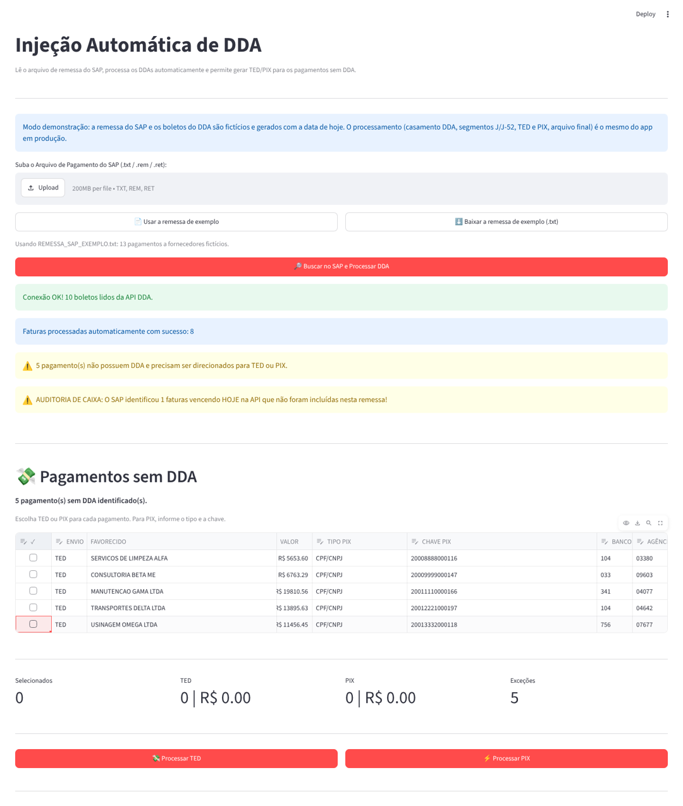
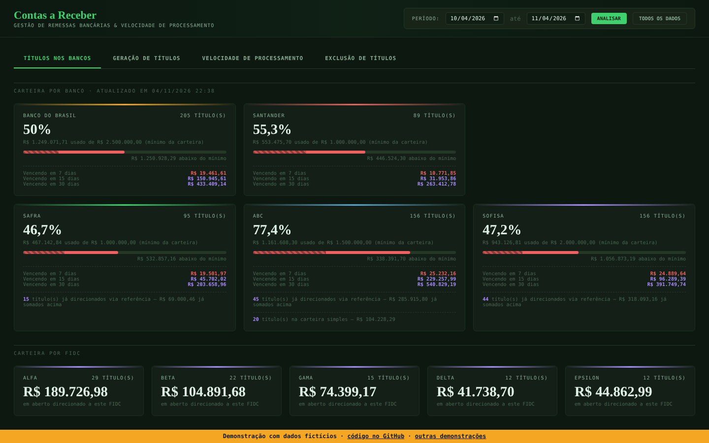

Integrações bancárias com o SAP S/4HANA
Demonstração dos dois apps com interface do projeto, com dados fictícios. Na versão real, eles leem o SAP S/4HANA e os arquivos dos bancos. Código e documentação: github.com/Joao-2003/sap-banking-integrations
Contas a Pagar · injeção de DDA
O app Streamlit real rodando no navegador: lê a remessa CNAB 240 do SAP, casa cada pagamento com os boletos do DDA, gera os segmentos J/J-52 e manda o que sobrou para TED ou PIX. Python no navegador (stlite) · primeira carga de 20 a 60 s
Carteira por banco e por FIDC, títulos a gerar, velocidade de processamento dos boletos e exclusão de títulos da base. HTML do próprio app Flask com dados fictícios · abre na hora
O app Streamlit real rodando no navegador: lê a remessa CNAB 240 do SAP, casa cada pagamento com os boletos do DDA, gera os segmentos J/J-52 e manda o que sobrou para TED ou PIX. Python no navegador (stlite) · primeira carga de 20 a 60 s

Contas a Receber · painel da carteiraCarteira por banco e por FIDC, títulos a gerar, velocidade de processamento dos boletos e exclusão de títulos da base. HTML do próprio app Flask com dados fictícios · abre na hora
